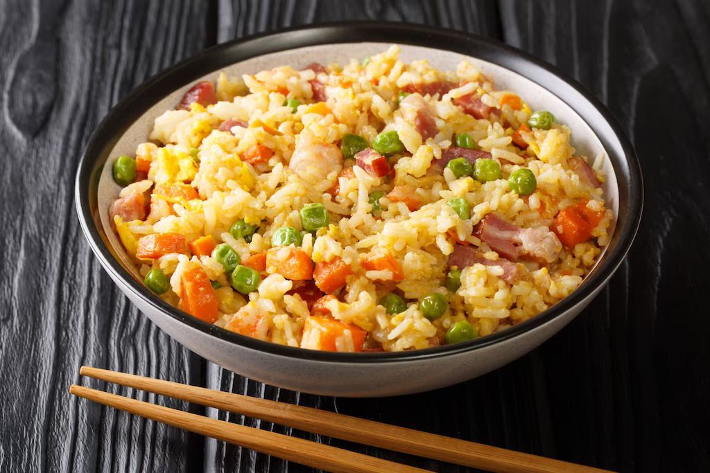

Yang Chow
⭐ ⭐ ⭐ ⭐ ⭐
Most Chinese restaurants, from high-end establishments to fast-food joints, offer different versions of fried rice. But what remains a staple on menus, alongside sweet and sour pork, siomai, and salt and pepper squid, is yang chow. You’ll rarely see a table without it, and no diner is too shy to bring home leftovers to enjoy the next day. The good news? You don’t need to head out anymore to have your fill of this hearty stir-fry. Follow this guide to making resto-style yang chow fried rice in under 30 minutes and with pantry usuals. It’s so satisfying that you won’t need to pair it with any other ulam. Next time you’re craving this all-in-one dish, try this recipe.
4 Persons
40 min.
Budget-Friendly

Ingredients
2 tbsp oil
6 cloves garlic, chopped
1 pc Knorr Shrimp Cube, mashed
1-2 pcs Chinese chorizo or ham, chopped
4 cups cooked, day-old rice
1/4 cup green peas
2-3 tbsp Knorr Liquid Seasoning
2 pcs eggs, beaten, cooked, and chopped
2tsbp sesane oil (optional)
chopped spring onion and toasted garlic
1/4 pc carrot, chopped